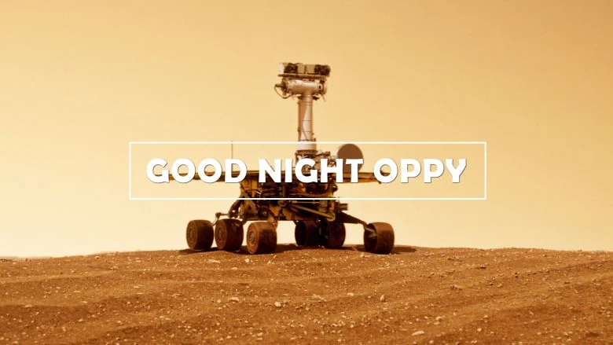

Ryan White'ın yönettiği ve Angela Bassett'in seslendirdiği 2022 yapımı Good Night Oppy, NASA'nın Opportunity adlı Mars keşif aracını merkeze alıyor. 2003'te fırlatılan aracın başlangıçta Mars'ta yalnızca yaklaşık 90 sol — Mars günü — çalışması bekleniyordu; Oppy ise görevini yaklaşık 15 yıla taşıdı. Belgesel, aracın kızıl gezegendeki yolculuğunu ve bu görevi Dünya'dan planlayıp yöneten ekiplerin deneyimlerini bir araya getiriyor.
Film; görev arşivlerinden, bilim insanları ve mühendislerle yapılan görüşmelerden ve Mars yüzeyindeki yolculuğu görselleştiren canlandırmalardan yararlanıyor. Bu nedenle yalnızca Opportunity'nin teknik başarılarını sıralayan bir uzay belgeseli değil: bir aracın tasarımından gönderdiği verilere kadar uzanan süreçte, ekiplerin belirsizliklerle nasıl çalıştığını da gösteriyor.
İzleyici açısından filmin en belirgin tercihi, Oppy'yi bir karakter gibi anlatması. Bu yaklaşım bilimsel görevi daha yakın ve anlaşılır kılıyor; aynı zamanda keşif aracının arkasındaki insan emeğini görünür kılıyor. Uzay görevlerine, robotik keşfe ve uzun soluklu ekip çalışmalarına ilgi duyanlar için duygusal yönü güçlü, erişilebilir bir seyir deneyimi sunuyor.